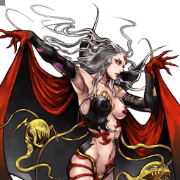

Final Fantasy III
Cloud of Darkness
Défenseure à stances tentaculaires et command block, entre close et midrange
Position dans la méta
Tier C 28ᵉ sur 30 — tier list tournoi 2017 de dissidia.wiki (moitié valeurs de matchups, moitié avis de joueurs experts).
Vue d'ensemble
Cloud of Darkness est une combattante défensive qui opère entre le close-range et le midrange. Chaque bravery attack est une stance mobile en trois temps, avec trois followups différents selon le timing d'input, ce qui permet un style de jeu réactif : occuper l'espace au sol avec des attaques à priorité mid, ou délivrer un déluge de coups. Ses nombreux HP attacks couvrent combos et neutral : Anti-Air Particle Beam pour les combos HP solo, Aura Ball pour temporiser, et le singulier command block Wrath Particle Beam pour stopper les adversaires agressifs.
Malgré une ATK de base faible, elle tire parti aussi bien des builds de dégâts que des builds Side by Side, et possède même une synergie unique, un peu gimmick, avec un build Mindbreak pour des quantités démesurées de bravery.
Historiquement, elle est considérée comme l'un des personnages les plus faibles du jeu compétitif. La raison principale tient à ses bravery attacks : la stance en trois temps doit être terminée avant de pouvoir dodge, si bien que chaque bravery est un engagement exceptionnellement long. Difficile dès lors de mettre la pression et de remplir la jauge d'assist rapidement — le gain d'assist lent sur whiff est un vrai problème de momentum. La plupart des followups de troisième temps n'offrent pas de propriétés justifiant leur startup, et les braveries aériennes protègent peu contre le rushdown tout en restant blockables. Obtenir une grosse récompense en situation de punish exige souvent assist, mur et/ou sol, qu'elle ne peut pas imposer facilement, et sa mobilité lente lui fait perdre la course aux EX Cores et à la jauge face aux adversaires défensifs.
Elle peut prospérer juste en dehors de la range de poke en position de défenseure, mais elle manque de forces notables pour compenser ses défauts : minimiser le risque et rester dans la course devient très exigeant à haut niveau.
Forces
- Command block : Wrath Particle Beam est l'un des command blocks les plus sûrs du jeu, précieux en self-defense après un air dodge et pour stopper les adversaires agressifs.
- Glide : possibilité de se déplacer pendant les bravery attacks, ce qui rend les whiffs un peu plus sûrs et permet de s'adapter à la situation.
Faiblesses
- Bravery attacks à très fort engagement : animations longues, donc télégraphées, vulnérables aux blocks (avançants), risquées par leur long recovery et aux opportunités de combo inconstantes malgré le long startup.
- Gain d'assist sur whiff : impossible de remplir la jauge rapidement en lançant des attaques, ce qui prive d'une ressource clé pour les dégâts et les comebacks.
- Anti-air défaillant : difficile d'empêcher l'adversaire de planer au-dessus d'elle (startup lent, engagement élevé, angles morts, hitboxes peu fiables) ; Tentacle of Pain 1, l'option la plus rapide, convertit mal avec assist.
- Anti-turtling : les adversaires peuvent fuir et la distancer sur les EX Cores et la jauge d'assist ; mobilité lente, HP télégraphés à long recovery et outils de provocation longue distance médiocres.
- Dilemme de range : elle est plus en sécurité juste hors du close-range, mais ses punishes bravery les plus rapides exigent d'être au contact ; petites hitboxes initiales des stances, mixups limités et whiffs longs à assumer.
- Coût en Capacity Points élevé : un loadout d'attaques complet coûte cher et laisse peu de place aux extra abilities.
Stats & vitesses
| Nom | Cloud of Darkness (暗闇の雲) |
|---|---|
| Jeu d'origine | Final Fantasy III |
| ATK de base (LV100) | 109 (Low) |
| DEF de base (LV100) | 111 (Average) |
| Vitesse de course | 9 (Slow) |
| Vitesse de dash | 85 (Slow) |
| Vitesse de chute | 109 (Very Slow) |
| Chute après esquive | 45 (Slowest) |
| BRV la plus rapide | 13F (Tentacle starters) |
| HP la plus rapide | 39F (Anti-Air P. Beam) |
| HP en 1 coup | Yes (Multiple) |
| HP links | Yes (Combos only) |
| Command block | Yes (Wrath P. Beam) |
| Armes | Poles, Rods, Staves, Thrown Weapons |
| Armures | Bangles, Clothing, Hats, Hairpins, Robes |
| Armes exclusives | Calcite Staff, Bizarre Staff, Everdark |
| Camp | Chaos |
| Doubleur (JP) | Masako Ikeda |
| Doubleur (ENG) | Laura Bailey |
Point or : ce personnage · petits points : le reste du cast · trait violet : moyenne. Valeurs du wiki, plus bas = plus rapide ; le rang à droite se lit directement (1ᵉʳ = le plus rapide).
Coups
Barre plus courte = coup plus rapide. Startup en frames (60 i/s, données dissidia.wiki), priorité indiquée après la valeur. Les coups marqués ★ sont les plus rapides du kit — ce sont en général vos meilleurs outils de punish et de pression.
Braveries
Liste
Tous les starters de bravery partagent les mêmes propriétés de base.
Tentacle Pain 1st Melee Low
| Dégâts de base | 21 (7, 7, 7) |
|---|---|
| Startup | 13F / 33F / 53F |
| Type | Physical |
| Priorité | Melee Low |
| EX Force | each 9 |
| Effets | -- |
Au sol
Tentacle of Pain Melee Low
Stance au sol en trois followups. Pain 1 (3 morsures) : string rapide avec beaucoup de hit stun et 90 EX, mais combos assist peu pratiques sans mur ni appel d'assist anticipé. Pain 2 (poussée) : attaque de midrange qui repousse les assauts, base damage élevée et Wall Rush vers combos assist. Pain 3 (bolts) : starter de combo et punish de midrange — les swipes combotent dans les bolts, qui mènent aux braveries aériennes ou à Anti-Air Particle Beam, avec assez de hit stun pour comboter en assist.
Followup 1 Melee Low
| Dégâts de base | 30 (8, 8, 14) |
|---|---|
| Startup | +4F |
| Type | Physical |
| Priorité | Melee Low |
| EX Force | 90 |
| Effets | Chase |
| Cancels | Dodge |
| CP (maîtrisé) | ?? (30) |
Followup 2 Melee Low
| Dégâts de base | 48 (12 x 4) |
|---|---|
| Startup | +4F |
| Type | Physical |
| Priorité | Melee Low |
| EX Force | 0 |
| Effets | Wall Rush |
| Cancels | Dodge |
| CP (maîtrisé) | ?? (30) |
Followup 3 Ranged Low
| Dégâts de base | 12 (4 x 3) |
|---|---|
| Startup | +34F |
| Type | Magical |
| Priorité | Ranged Low |
| EX Force | 0 |
| Effets | -- |
| Cancels | Dodge |
| CP (maîtrisé) | ?? (30) |
Tentacle of Spite Melee Low
Stance au sol aux followups mid priority utiles en neutral, à mixer avec Tentacle of Pain. Spite 1 (balayage) : « get off me » rapide dont le Wall Rush mène aux combos assist, et qui force une réaction de ground Wall Rush même contre Auto Recovery. Spite 2 (toupie) : self-defense mid priority et starter de combo assist, avec effet d'aspiration, mais période de recovery vulnérable après l'envoi. Spite 3 (orbe) : l'une de ses meilleures braveries au sol — orbe à tête chercheuse Ranged Mid qui stagger les blocks, tire l'adversaire vers le haut et tient assez pour les combos assist ; angle mort au-dessus d'elle et hits qui peuvent dropper sur membres étendus.
Followup 1 Melee Low
| Dégâts de base | 28 |
|---|---|
| Startup | +4F |
| Type | Physical |
| Priorité | Melee Low |
| EX Force | 0 |
| Effets | Wall Rush |
| Cancels | Dodge |
| CP (maîtrisé) | 60 (30) |
Followup 2 Melee Mid
| Dégâts de base | 40 (3 x 8, 16) |
|---|---|
| Startup | +8F |
| Type | Physical |
| Priorité | Melee Mid |
| EX Force | 84 |
| Effets | -- |
| Cancels | Dodge |
| CP (maîtrisé) | 60 (30) |
Followup 3 Ranged Mid
| Dégâts de base | 18 (3 x 6) |
|---|---|
| Startup | +12F |
| Type | Magical |
| Priorité | Ranged Mid |
| EX Force | 0 |
| Effets | -- |
| Cancels | Dodge |
| CP (maîtrisé) | 60 (30) |
En l’air
Tentacle of Suffering Melee Low
Stance aérienne. Suffering 1 (estoc) : rapide, fort tracking vertical, crée de la distance et punit près des murs ; combote dans Aerith assist n'importe où via Chase (Kuja/Jecht exigent plafond ou corner) et sert de combo filler pendant l'assist BRV air d'Exdeath. Suffering 2 (360°) : portée tout autour mais télégraphée et vulnérable aux blocks ; punish en close-range qui tient assez pour les combos assist en midscreen. Suffering 3 (2 boules) : option plutôt sûre contre les blocks à mi-distance ; les deux projectiles qui connectent combotent en assist, et contre The Emperor ou Ultimecia on peut les tirer contre les murs pour les faire réfléchir et activer Wrath Particle Beam.
Followup 1 Melee Low
| Dégâts de base | 30 |
|---|---|
| Startup | +2F |
| Type | Physical |
| Priorité | Melee Low |
| EX Force | 60 |
| Effets | Chase |
| Cancels | Dodge |
| CP (maîtrisé) | 60 (30) |
Followup 2 Melee Low
| Dégâts de base | 40 (3 x 10, 10) |
|---|---|
| Startup | +4F |
| Type | Physical |
| Priorité | Melee Low |
| EX Force | 90 |
| Effets | -- |
| Cancels | Dodge |
| CP (maîtrisé) | 60 (30) |
Followup 3 Ranged Low
| Dégâts de base | each (8) |
|---|---|
| Startup | +12F |
| Type | Magical |
| Priorité | Ranged Low |
| EX Force | 0 |
| Effets | -- |
| Cancels | Dodge |
| CP (maîtrisé) | 60 (30) |
Tentacle of Scorn Melee Low
Stance aérienne. Scorn 1 (2 hits) : jab rapide pour repousser et whiff punir, Wall Rush utile près des murs mais hit stun et knockback courts. Scorn 2 (vertical) : longue allonge vers le haut ou le bas selon la position adverse, Wall Rush dans les deux sens ; d'autant plus facile à bloquer que la distance est grande, avec une deadzone devant elle. Scorn 3 (projectiles) : pression occasionnelle vers le bas — si plusieurs projectiles touchent, un Free Air Dash permet de comboter derrière ; perd contre les dashes, à utiliser avec parcimonie.
Followup 1 Melee Low
| Dégâts de base | 30 (10, 20) |
|---|---|
| Startup | +10F |
| Type | Physical |
| Priorité | Melee Low |
| EX Force | 30 |
| Effets | Wall Rush |
| CP (maîtrisé) | 60 (30) |
Followup 2 Melee Low
| Dégâts de base | 28 |
|---|---|
| Startup | +10F |
| Type | Physical |
| Priorité | Melee Low |
| EX Force | 0 |
| Effets | Wall Rush |
| CP (maîtrisé) | 60 (30) |
Followup 3 Ranged Low
| Dégâts de base | each (3) |
|---|---|
| Startup | +10F |
| Type | Magical |
| Priorité | Ranged Low |
| EX Force | 0 |
| Effets | -- |
| CP (maîtrisé) | 60 (30) |
Attaques HP
Au sol
[Anti-air] Particle Beam Ranged High
[Close, 39F] Colonnes de ténèbres autour d'elle, utilisées en combo solo après Pain 3, après un block stagger et pour menacer les adversaires aériens. Mène à des combos assist constants n'importe où, d'où sa valeur d'ender de combo solo avec Side by Side ; recovery assez long pour être puni (même par Kuja BRV assist), et l'adversaire peut tomber du haut du faisceau.
| Dégâts de base | 9 (1 x 9) |
|---|---|
| Startup | 39F |
| Type | Magical |
| Priorité | Ranged High |
| EX Force | 87 |
| CP (maîtrisé) | 30 (15) |
[Wide-Angle] Particle Beam Ranged High
[Long, 61F] HP en un coup à hitbox très large : ender de combo assist tolérant, capable d'attraper les ground dodges joués en auto pilot. Synergie unique avec les builds Mindbreak (détruit les éléments de décor de World of Darkness et Pandaemonium - Top Floor pour accumuler la bravery). Long recovery après le tir : vulnérable aux dodge > contre-attaques et assist punishes ; la hitbox est moins haute que le visuel.
| Startup | 61F |
|---|---|
| Priorité | Ranged High |
| EX Force | 0 |
| Effets | Wall Rush |
| CP (maîtrisé) | 30 (15) |
[Long-Range] Particle Beam Ranged High
[Long, 83F] Zoning secondaire en neutral menant à des combos assist constants sur hit. Une fois tiré, il reste actif longtemps avec de hautes hitboxes et un tracking moyen : il faut dodge à travers tous les faisceaux. Recovery punissable mais juste assez court pour éviter les assists BRV sol lents (Kuja, Tidus). C'est aussi l'une des meilleures attaques à associer au landing cancel bug, qui la rend plus sûre et en fait un starter de combo solo.
| Startup | 83F |
|---|---|
| Priorité | Ranged High |
| EX Force | each 30 |
| CP (maîtrisé) | 30 (15) |
[Feint] Particle Beam Ranged High
[Dodge, 61F] Esquive au départ puis tir de canon : sert à éviter les attaques adverses et c'est son meilleur combo filler HP avec Jecht BRV air ou Kuja BRV sol. HP en un coup à l'explosion longtemps active, mais l'invincibilité est trompeusement courte et finit avant sa réapparition ; la direction du déplacement est contrôlable librement.
| Startup | 61F |
|---|---|
| Priorité | Ranged High |
| EX Force | 0 |
| Effets | Wall Rush, Dodge |
| CP (maîtrisé) | 30 (15) |
[Wrath] Particle Beam (ground) Block High / Ranged High
Command block signature (block instantané 1F~13F, contre à 45F) : self-defense après dodge et outil anti-agression. Stagger les dashes et les braveries mêlée low ET mid ; sur contre réussi, un faisceau à dégâts HP apparaît sur l'adversaire avec assez de hit stun pour lancer un combo assist, avec une brève invincibilité à l'activation. Contre les projectiles, pas de stagger : l'adversaire peut dodge le faisceau à réaction et elle reste brièvement vulnérable aux assists ; la durée de block courte exige un vrai timing.
| Dégâts de base | 9 (1 x 9) |
|---|---|
| Startup | 1F~13F (Block) ~56F (missed block recovery) 45F (counter attack) |
| Type | Magical |
| Priorité | Block High / Ranged High |
| EX Force | 87 |
| Effets | Block |
| CP (maîtrisé) | 30 (15) |
En l’air
Aura Ball Ranged High
[Close, 63F/73F] Outil de self-defense passif : sphères détonantes (charge pour en créer plusieurs, orientables au stick) qui permettent de remplir la jauge d'assist plus sereinement. Les explosions, larges et longtemps actives, stoppent les assist punishes, et le dodge cancel est relativement court ; la boule explose même si elle se fait toucher. Attention aux projectiles (Shadow Flare de Sephiroth, Electrocute de Gilgamesh) et aux attaques disjointed comme Chain Cast de Garland ; les longues frames actives permettent aussi un peu d'okizeme en espaces exigus.
| Startup | 63F / 73F |
|---|---|
| Priorité | Ranged High |
| EX Force | each 60 |
| CP (maîtrisé) | 30 (15) |
[0-form] Particle Beam Melee High
[Mid, 63F] HP aérien de base : ender de combo assist et punition de block stagger, avec tracking horizontal/diagonal, longues frames actives et très fort knockback propice au Wall Rush. Haut risque toutefois : startup lent, portée trop courte contre les air dodges boostés Adamant Chains, long recovery, et c'est sa seule attaque Melee High — réfléchir un projectile Ranged High avec la laisse grande ouverte.
| Dégâts de base | 2 x 8 (16) |
|---|---|
| Startup | 63F |
| Type | Magical |
| Priorité | Melee High |
| EX Force | 24 |
| Effets | Wall Rush |
| CP (maîtrisé) | 30 (15) |
[Fusillade] Particle Beam Ranged High
[Long, 83F] Pression secondaire en neutral, proche de Long-Range : force un dodge ou une réaction défensive des adversaires passifs en midrange. Les projectiles sont actifs dès le tir et protègent l'avant, puis timing de dodge ambigu (angles et timings différents) ; ils continuent de frapper même après son propre dodge. Déplaçable au stick jusqu'au tir, mais dangereux si l'adversaire interrompt avec assist ou dash ; permet aussi une pression longue distance supplémentaire après Jecht BRV air.
| Startup | 83F |
|---|---|
| Priorité | Ranged High |
| EX Force | 0 |
| Effets | Wall Rush |
| CP (maîtrisé) | 30 (15) |
[Wrath] Particle Beam (midair) Block High / Ranged High
Version aérienne du command block, fortement recommandée : même fonctionnement (guard instantané, courte durée, faisceau sur l'adversaire en cas de block réussi). Le compétitif se jouant beaucoup en l'air, c'est un outil de self-defense précieux, notamment juste après un air dodge pour rendre l'esquive bien plus sûre ; récompense inconstante contre les projectiles et brève vulnérabilité aux assists après le faisceau.
| Dégâts de base | 1 x 9 (9) |
|---|---|
| Startup | 1F~13F (Block) ~56F (missed block recovery) 45F (counter attack) |
| Type | Magical |
| Priorité | Block High / Ranged High |
| EX Force | 87 |
| Effets | Block |
| CP (maîtrisé) | 30 (15) |
EX Mode: Flood of Darkness! & EX Burst
EX Mode « Flood of Darkness! » : Regen, Critical Boost et Null Particle Beam. Null Particle Beam permet d'annuler le recovery de n'importe quelle attaque en effectuant un HP attack : whiffs plus sûrs (enchaîner sur Wrath pour se protéger), combo Pain 3 > Anti-Air plus tolérant, et surtout Pain 3 > Wide-Angle / Feint qui devient un combo midscreen fiable avec dégâts HP Wall Rush. Il n'y a pas de limite apparente au chaînage de HP attacks tant que l'EX Mode est actif, ce qui permet aussi de saturer la scène (Wide-Angle, Aura Ball, Wrath répétés).
L'EX Mode reste toutefois bridé : les EX Modes servent souvent à garantir la victoire sur un combo assist, dont elle profite peu, et Cloud of Darkness remplit mal sa jauge EX — la plupart de ses attaques ne génèrent pas d'EX et les courses aux EX Cores sont difficiles avec son dash lent et ses longues animations.
EX Burst : Ultra Particle Beam : maintenir Circle pour remplir la jauge jusqu'à 120 % puis relâcher rapidement (exécution proche de l'EX Burst d'Exdeath). Dégâts bravery modestes (faible base damage initiale), mais suffisants pour conclure un match après un combo assist en Wall Rush.
Plan de jeu & techniques avancées
Jouez la défenseure juste en dehors de la range de poke adverse : c'est là qu'elle prospère. Au sol, mixez Tentacle of Pain et Tentacle of Spite (les followups mid priority de Spite tiennent le neutral, Spite 3 stagger les blocks et soutient les approches) ; en l'air, appuyez-vous sur Wrath Particle Beam après vos air dodges pour faire hésiter les personnages de mêlée, et sur Aura Ball pour temporiser et remplir la jauge d'assist plus sereinement, à défaut de rapidement.
Le combo solo de référence est Tentacle of Pain 3 (bolts) > Anti-Air Particle Beam, prolongeable en assist derrière ; à longue distance, Spite 3 > saut > Free Air Dash permet une conversion bravery. Les combos assist pratiques partent d'un Wall Rush, de Spite 2, Spite 3, Suffering 2 ou Scorn 2. Pensez à vous écarter de l'adversaire après l'appel d'assist sur Spite 2 / Suffering 2 pour ne pas le repousser hors du combo.
Gérez l'engagement : chaque bravery est une stance complète qu'on ne peut dodge qu'après le troisième swipe — utilisez le glide au stick pour créer de la distance, augmenter la range effective ou esquiver un block avançant. Contre les adversaires défensifs, acceptez que la course aux EX Cores et à la jauge soit défavorable : les récompenses viennent des reads, de Wrath et des HP attacks qui forcent le dodge (Wide-Angle + Spite 3 / assist pour créer des situations de checkmate, encore renforcées en EX Mode par Null Particle Beam).
Techniques spécifiques
Landing cancel bug
Bug d'annulation à l'atterrissage, à exploiter en priorité avec Long-Range Particle Beam : il rend l'attaque plus sûre et la transforme en starter de combo solo, avec Anti-Air Particle Beam ou des braveries aériennes en suite.
Aura Ball okizeme
Grâce aux longues frames actives et à la fenêtre de dodge relativement précoce d'Aura Ball, un Wall Rush bravery ou un Fusillade laisse le temps de poser une explosion retardée : peu pratique en espace ouvert, mais peut réussir dans les recoins et corners et déboucher sur des combos solo.
Reflect Suffering 3 pour activer Wrath
Contre des personnages comme The Emperor et Ultimecia, tirez Suffering 3 contre les murs pour que les projectiles soient réfléchis vers vous : ils servent alors de déclencheur au command block Wrath Particle Beam.
Routes de combo solo recensées
Un EX Mode entièrement bâti autour des combos, mais un bon nombre de routes existent en dehors malgré sa frame data médiocre. Le relevé abrège les noms : le chiffre désigne la variante du tentacule (followup 1 à 3) et « Beam » les Particle Beams. Routes : Tentacle of Pain 3 > [Anti-air] Particle Beam, [Feint] Particle Beam EX ou [Wide-Angle] Particle Beam EX ; Tentacle of Spite 3 (mi-longue portée, courte en EX) > dodge cancel hors EX > [Wide-Angle] Particle Beam ; [Wrath] Particle Beam > DC > Tentacle of Suffering 1 ou 2, ou Tentacle of Scorn 1 ; Aura Ball (hit retardé) > DC > Suffering 1, Scorn 1 ou [0-form] Particle Beam EX ; Pain 3 > DC > l'un des deux tentacules aériens (Suffering, Scorn) ; Scorn 3 (près du sol) > [0-form] Particle Beam EX ou dash vers un tentacule aérien ; Suffering 1 > [0-form] Particle Beam EX ; Suffering 1 au plafond > DC > Suffering 1.
Sources : pastebin.com/8FWDXjvJ
Combos documentés (notation d'origine, dissidia.wiki)
Cloud of Darkness has a handful of combo routes both solo and with assist. Solo combos get more situational and difficult pretty quickly, but assists can help set them up.
This section does not show all combos right now. They will be listed more thoroughly on a separate combo page in the future.
The most practical solo combo route usually involves Tentacle of Pain 3 (Bolts), followed by Spite 3 (Orb).
The damage values assume that any preceding tentacle hits connected.
Practical assist combos usually start with any wall rush, Spite 2 (Spin), Spite 3 (Orb), Suffering 2 (360°) and Scorn 2 (Vertical).
Techniques universelles (blodge, dash feint, lock off, dodge punishment) : voir la page Techniques & glitches.
Matchups
Les sources n'offrent pas d'analyse par matchup (page stub), mais dessinent des tendances : les adversaires défensifs et fuyards sont son pire scénario — ils la distancent sur les EX Cores et la jauge d'assist, et ses outils de provocation à longue distance sont médiocres. À l'inverse, Wrath Particle Beam impose le respect aux personnages agressifs de mêlée, dont il stagger dashes et braveries low/mid.
Quelques repères nommés : contre The Emperor et Ultimecia, Suffering 3 réfléchie par les murs peut activer Wrath ; attention aux projectiles de Sephiroth (Shadow Flare) et Gilgamesh (Electrocute) ainsi qu'au Chain Cast disjointed de Garland qui traversent la défense d'Aura Ball. Enfin, le build dégâts documenté est recommandé contre les utilisateurs de Side by Side qui ne contestent pas l'EX, tels que Firion, Onion Knight et Golbez.
Vidéos de matchs : Replay Theater — matchs de Cloud of Darkness.
Builds
Le wiki documente un build « Damage (High Base BRV) » : 1523 BRV de base, assist Kuja, invocation Rubicante, Everdark / Chainsaw / Thornlet / Maximillian et boosters (Sniper Eye, Dismay Shock, Battle Hammer, BRV = 0, etc.), Equip Glitch assumé pour le coût CP (440/450). L'idée : de gros dégâts HP via Wall Rush — un combo assist démarré sur un HP attack peut dépasser 3000 HP de dégâts, et comme ils viennent d'une bravery naturellement haute, la DEF adverse les réduit peu.
Le build exploite l'arme exclusive LV100 Everdark pour sa récupération de bravery, ce qui libère de la place pour la base bravery, les dégâts HP Wall Rush et la déplétion de ressources. BRV = 0 est le booster vedette : il active Sniper Eye et Dismay Shock à chaque Wall Rush d'un HP attack (par exemple 0-form Particle Beam), portant le multiplicateur de x2.3 à x3.3. Miracle Shoes et Maximillian compensent la perte de HP max de Chainsaw et Thornlet.
Une variante Side by Side remplace First to Victory par Side by Side : les reads en HP attack deviennent plus payants, au prix de la désactivation totale de la jauge EX et de l'absorption d'EX ; le booster Empty EX Gauge devient alors disponible en remplacement d'un autre booster au choix (Summon Unused par exemple). Plus largement, le personnage se prête aux builds de dégâts comme aux builds Side by Side, avec en marge la synergie Mindbreak (bravery accumulée en détruisant le décor avec Wide-Angle Particle Beam).
Damage (High Base BRV)
| Stats | |
|---|---|
| HP | 9883 |
| CP | 450 |
| BRV | 1523 |
| ATK | 176 |
| DEF | 184 |
| LUK | 61 |
| Max Booster | x3.3 |
| Equipment | |
|---|---|
| Assist | Kuja |
| Weapon | Everdark |
| Hand | Chainsaw |
| Head | Thornlet |
| Body | Maximillian |
| Accessory 1 | Sniper Eye |
| Accessory 2 | Dismay Shock |
| Accessory 3 | Battle Hammer |
| Accessory 4 | BRV = 0 |
| Accessory 5 | Summon Unused |
| Accessory 6 | Pre-EX Mode |
| Accessory 7 | Pre-EX Revenge |
| Accessory 8 | Blue Gem |
| Accessory 9 | First to Victory |
| Accessory 10 | Miracle Shoes |
| Summon | Rubicante |
| Au sol | En l’air |
|---|---|
| Tentacle of Pain | Tentacle of Suffering |
| ↑+ Tentacle of Spite | ↑+ Tentacle of Scorn |
| Au sol | En l’air |
|---|---|
| Anti-air Particle Beam | 0-form Particle Beam |
| ↑+ Long-Range Particle Beam | ↑+ Fusillade Particle Beam |
| ↓+ Feint Particle Beam | ↓+ Wrath Particle Beam |
| Actions |
|---|
| Ground Evasion |
| Midair Evasion |
| Ground Block |
| Midair Block |
| Aerial Recovery |
| Recovery Attack |
| Controlled Recovery |
| Wall Jump |
| Free Air Dash |
| Omni Ground Dash+ |
| Multi Air Slide |
| Free Air Dash Boost |
| Assist Gauge Up Dash |
| Ground Evasion Boost |
| Midair Evasion Boost |
| Evasion Boost |
| Descent Speed Boost |
| Support |
|---|
| Always Target Indicator |
| EX Core Lock On |
| Auto Assist Lock On |
| Extra |
|---|
| Precision Evasion |
| EXP to HP |
| Machinery |
| CP |
|---|
| 440 / 450 |
Build Overview
Le build dégâts est recommandé contre les utilisateurs de Side by Side qui ne contestent pas l'EX (Firion, Onion Knight, Golbez) ; obtenir des dégâts tôt en attaquante, bien que risqué, y est jugé profitable car les adversaires expérimentés temporisent avant d'approcher.
Synergies d'assist
Cloud of Darkness en tant qu'assist
Cloud of Darkness est classée Low dans la tier list assist (Muggshotter) et le wiki ne propose aucune évaluation rédigée de son rôle d'assist (section « Assist Overview » vide).
Ses données d'assist : Tentacle of Pain (BRV sol, 37F, Wall Rush, jusqu'à 62 de base), Tentacle of Suffering (BRV air, 37F, Chase, 40 de base), [Anti-air] Particle Beam (HP sol, 39F, Chase) et [Fusillade] Particle Beam (HP air, 83F, Wall Rush).
Assists recommandées
- Kuja — Cité comme bon assist dans la section Synergies ; c'est l'assist du build documenté, et Feint Particle Beam sert de combo filler HP avec son BRV sol.
- Jecht — Cité comme bon assist ; les combos assist documentés l'utilisent, Feint sert de filler avec son BRV air, et Fusillade prolonge la pression à longue distance en profitant de son long knockdown.
- Exdeath — Cité comme bon assist ; Suffering 1 fait office de combo filler pendant son assist BRV aérien.
- Aerith — Suffering 1 combote dans Aerith assist n'importe où grâce au Chase, là où Kuja et Jecht exigent plafond ou corner.
Tech communautaire
EX Mode Pain 3 > Anti-Air Particle Beam Corner Combo
Vidéo de démonstration du combo en corner rendu possible par Null Particle Beam : Tentacle of Pain 3 enchaîné dans Anti-Air Particle Beam pendant l'EX Mode.
https://www.youtube.com/watch?v=4Ij0gudeuzE&feature=youtu.be
Dissidia 012 [Duodecim] Final Fantasy- Cloud of Darkness: EX Revenge Basic Combos 2011
Vidéo d'époque par CaminoalAlba détaillant les combos d'EX Revenge de Cloud of Darkness, dont l'enchaînement des braveries en HP permis pendant l'EX Mode.
Dissidia 012- Cloud of Darkness: Basic Assist Combos 2012
Courte vidéo de Kiyuu Ch montrant les combos d'assist de base de Cloud of Darkness.
Liste de combos solo de tout le cast (Eddiegames) 2022
Relevé communautaire des routes de combo solo des 31 personnages, rédigé par Eddiegames sur le Discord DISSIDIA et publié en pastebin (dernière mise à jour décembre 2022). Cloud of Darkness y est décrite avec un EX Mode bâti pour les combos et un bon nombre de routes en dehors.
Sources
- https://dissidia.wiki/Cloud_of_Darkness_(Dissidia_012)
- https://www.youtube.com/watch?v=4Ij0gudeuzE
- https://www.youtube.com/watch?v=4Ij0gudeuzE&feature=youtu.be
- https://www.youtube.com/watch?v=qxdNUV_Az1s
- https://www.youtube.com/watch?v=3ETIks3fVao
- https://pastebin.com/8FWDXjvJ
- https://dissidia.wiki/Tier_List_(Dissidia_012)
- https://dissidia.wiki/Tier_List_(Assist)
Limites connues
- La page Matchups du wiki est une ébauche (stub) : aucune analyse détaillée par matchup.
- Aucune mécanique unique documentée (section absente du wiki) — les stances en trois temps sont décrites dans les notes de coups, pas dans une section dédiée.
- Aucune évaluation rédigée du personnage en tant qu'assist (section « Assist Overview » vide) : seuls la table de données et le classement Low de la meta sont disponibles.
- Combos incomplets de l'aveu même du wiki (« This section does not show all combos right now ») ; les dégâts et gains d'EX des combos assist Jecht sont notés « ??? ».
- Le coût CP de Tentacle of Pain est partiellement inconnu (« ?? (30) ») et le gain de jauge d'assist par coup n'est pas renseigné.